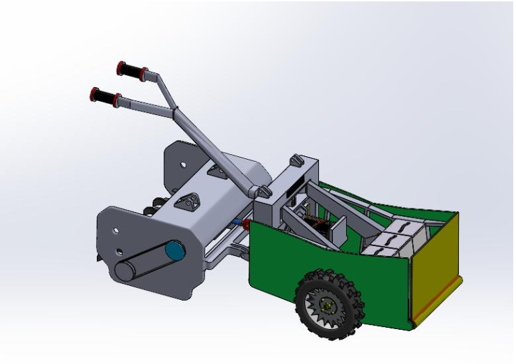
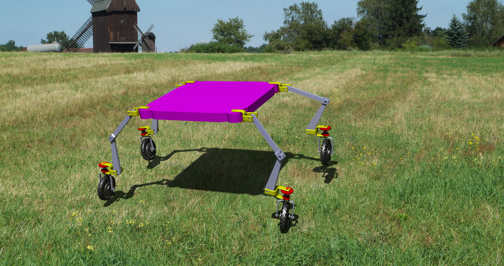
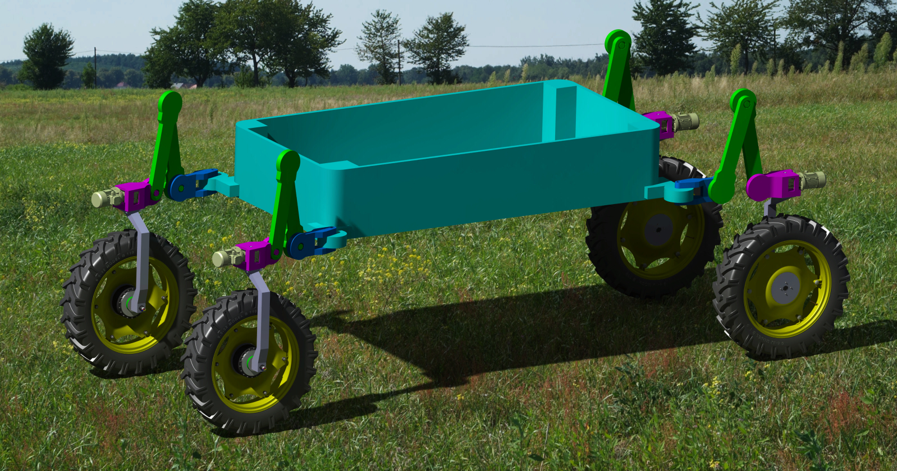

01
E-Tractor Concept Model I
Early compact agricultural robotic platform concept focusing on modular chassis architecture, adaptive field mobility, and lightweight mechanical design for smart agriculture.

Early compact agricultural robotic platform concept focusing on modular chassis architecture, adaptive field mobility, and lightweight mechanical design for smart agriculture.

Advanced CAD-based adaptive agricultural mobility concept integrating articulated wheel-leg mechanisms for uneven terrain navigation and intelligent farming applications.

Large-scale intelligent E-Tractor platform concept designed for autonomous agricultural operations, payload integration, and future robotic automation systems.
Adaptive underwater robotic platform designed for inspection, exploration, intervention, and intelligent marine operations in challenging aquatic environments.
Generalized dynamic modeling framework for complex articulated robotic systems, adaptive mechanisms, and intelligent locomotion platforms.
Control, planning, and interaction strategies for robotic manipulation in uncertain and dynamically changing environments.
Adaptive locomotion mechanisms and controllers inspired by biological motion patterns, intelligent mobility, and natural systems.